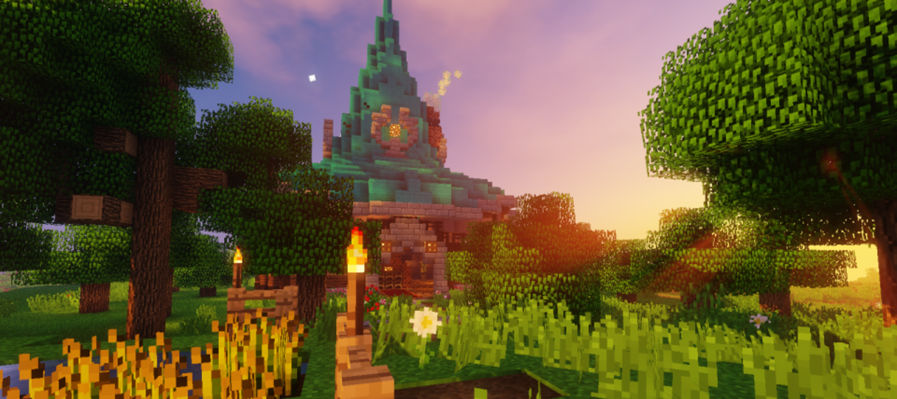
魔術MOD
-
MOD名
Botania
-
解説サイト
https://w.atwiki.jp/minecraft/pages/1410.html(Minecraft Japan Wiki)
-
MOD名
Thaumcraft
-
アドオン
Crimson Revelations
Thaumic Augmentation -
解説サイト
https://w.atwiki.jp/minecraft/pages/1733.html(Minecraft Japan Wiki)(情報少なめ)
https://lilygamelife.com/sitemap/minecraft/thaumcraft6/(おすすめ攻略サイト)
サイト内解説
・Crimson Revelations
|
Crimson Cult Banner |
説明 |
|---|---|
| 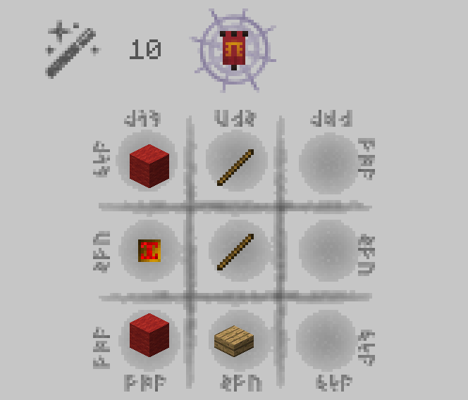 | 【神秘の作業台で作成】 【消費Vis：10】赤色の羊毛2+棒2+オークのハーフブロック+Redstone Inlay |
|
Crimson Cult装備 |
説明 |
| 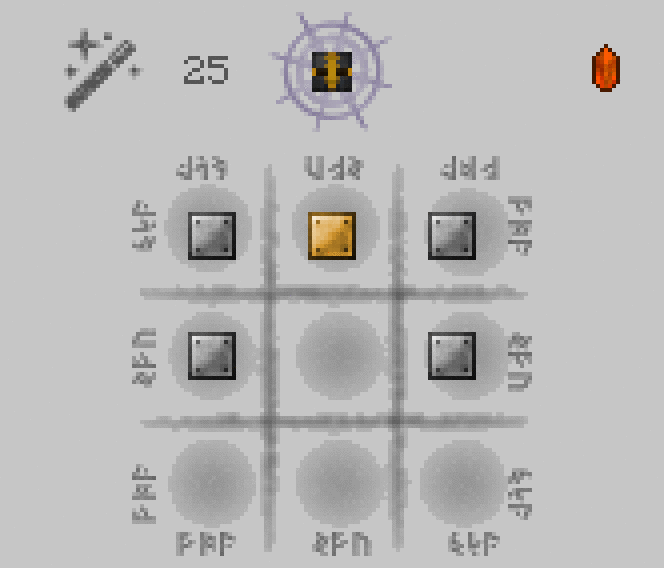 | 【神秘の作業台で作成】 【消費Vis：25】Ignis Vis Crystal+Brass Plate+Iron Plate4：Crimson Cult Helm 【消費Vis：25】Ignis Vis Crystal+Iron Plate4+赤色の羊毛2+Crimson Cult Banner：Crimson Cult Chestplate 【消費Vis：25】Ignis Vis Crystal+Iron Plate4+赤色の羊毛2+Crimson Cult Banner：Crimson Cult Greaves 何の効果もない装備。防御力は鉄と同程度。 |
|
Crimson Cult装備 |
説明 |
| 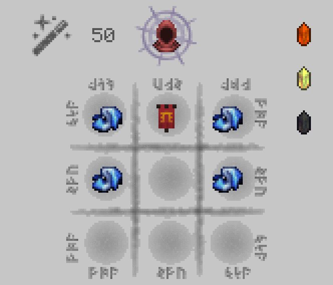 | 【神秘の作業台で作成】 【消費Vis：50】Ignis Vis Crystal+Aer Vis Crystal+Perditio Vis Crystal+Crimson Cult Banner+Enchanted Fabric4：Crimson Cult Hood 【消費Vis：50】Ignis Vis Crystal+Aer Vis Crystal+Perditio Vis Crystal+Enchanted Fabric4+Iron Plate2+赤色の羊毛+Crimson Cult Banner：Crimson Cult Robe 【消費Vis：50】Ignis Vis Crystal+Aer Vis Crystal+Perditio Vis Crystal+Enchanted Fabric4+赤色の羊毛2+Crimson Cult Banner：Crimson Cult Leggings 【消費Vis：50】Ignis Vis Crystal+Aer Vis Crystal+Perditio Vis Crystal+Iron Plate2+赤色の羊毛2：Crimson Cult Boots 防御力はチェーン装備程度。着ると歪みとVis使用削減を得られる。 |
|
Crimson Praetor装備 |
説明 |
| 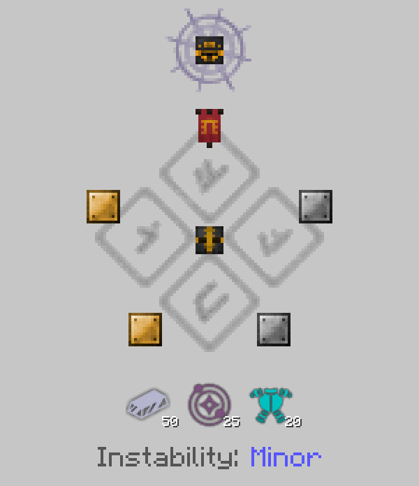 | 【神秘の祭壇で作成】 【エッセンシア：Metallum50+Alienis25+Praemunio20】Brass Plate2+Iron Plate2+Crimson Cult Banner+Crimson Cult Helm：Crimson Praetor Helm 【エッセンシア：Metallum50+Alienis30+Praemunio25】Brass Plate+Iron Plate5+Crimson Cult Banner+Crimson Cult Banner+Crimson Praetor Chestplate：Crimson Cult Robe 【エッセンシア：Metallum50+Alienis25+Praemunio25】Brass Plate+Iron Plate3+Crimson Cult Banner+Crimson Cult Greaves：Crimson Praetor Greaves 防御力鉄以上ダイヤ以下。効果はない。 |
|
Crimson Blade |
説明 |
| 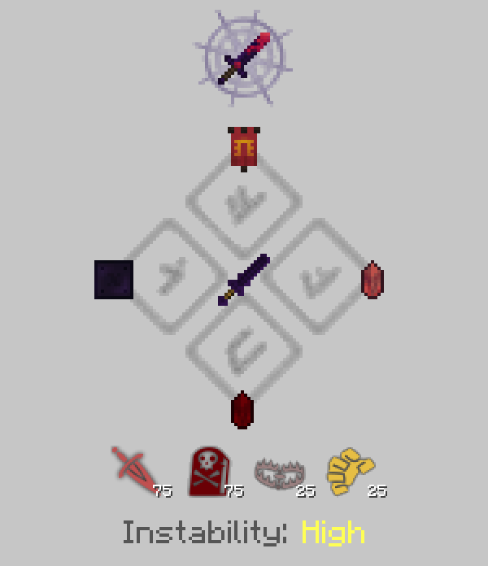 | 【神秘の祭壇で作成】 【エッセンシア：Aversio75+Mortuus75+Vinculum25+Desiderium25】Mortuus Vis Crystal+Aversio Vis Crystal+Crimson Cult Banner+Void Metal Plate+Void Sword 攻撃力：15() 耐久力が自動回復する。 |
・Thaumic Augmentation
・中間素材
| 名前 | 画像 | 作り方 | 説明 |
|---|---|---|---|
| Vis Regeneration Lattice | 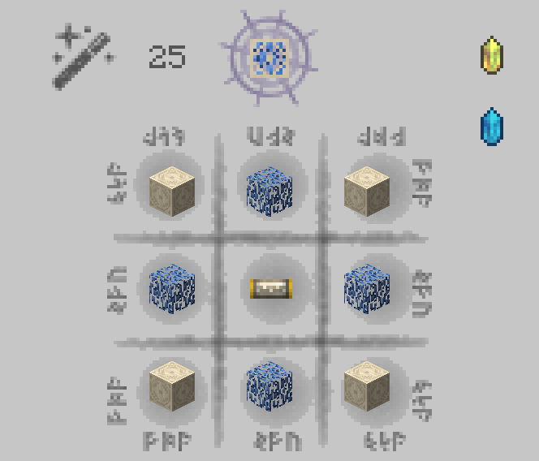 |
【神秘の作業台で作成】 消費Vis：25 AerのVis結晶：1 AquaのVis結晶：1 シルバーウッドの木材*4 シルバーウッドの葉*4 エッセンシアフィルター*1 |
|
| Warding Sigil | 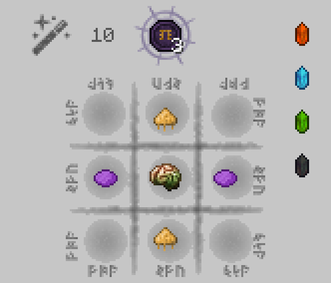 |
【神秘の作業台で作成】 消費Vis：10 IgnisのVis結晶：1 AquaのVis結晶：1 TerraのVis結晶：1 PerditioのVis結晶：1 魔法の樹脂*2 紫色の染料*2 ゾンビの脳*1 |
各種保護ブロックに使用する。 |
| Harness Base | 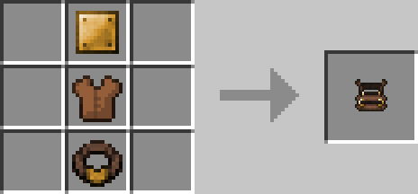 |
真鍮板*1 革のチェストプレート*1 ただのベルト*1 |
|
| Impetus jewel | 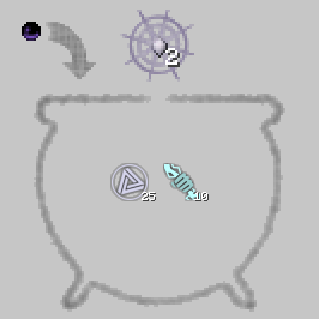 |
【るつぼで作成】 Ordo：25 Potentia：10 虚無の種*1 |
・装飾ブロック
| 名前 | 画像 | 作り方 | 説明 |
|---|---|---|---|
| Ancient Bricks | 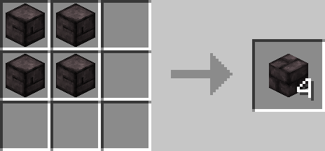 | いにしえの石*4 | |
| Ancient Stone Stairs | 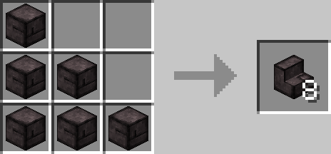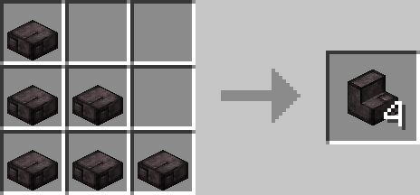 | いにしえの石*6 or いにしえの石ハーフブロック*6 |
|
| Ancient Pillar | いにしえの石ハーフブロック*2 | ||
| Smooth Ancient Brick | 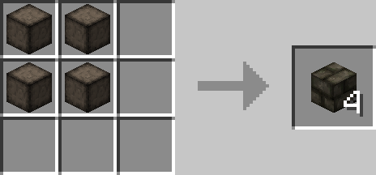 | いにしえの石タイル*4 | |
| Ancient Stone Tile Slab | 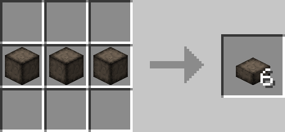 | いにしえの石タイル*3 | |
| Void Stone | 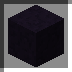 | ネザーに出現するDimensional Fractureの周辺に生成される。 | |
| エルドリッチの石 | 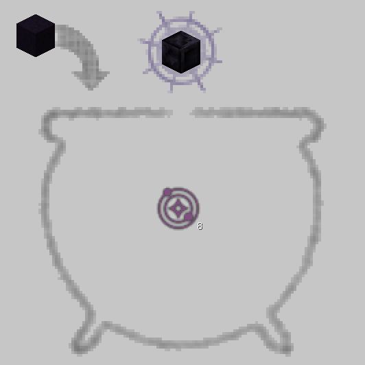 | 【るつぼで作成】 Aliens：8 Void Stone*1 |
Thaumcraftで追加されるブロックだが、Thaumic Augmentationよりレシピが追加された。 |
| Eldritch Stone Stairs | 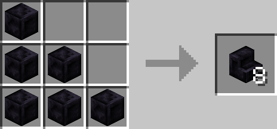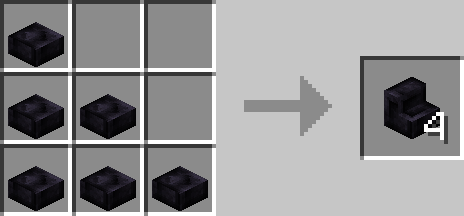 | エルドリッチの石*6 or エルドリッチの石ハーフブロック*6 |
|
| Ancient Lantern | 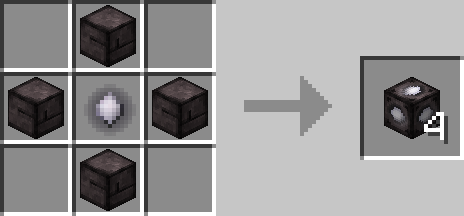 | いにしえの石*4 Impetus Jewel*1 |
明るさレベル15の光を発する。 |
| Fortified Glass | 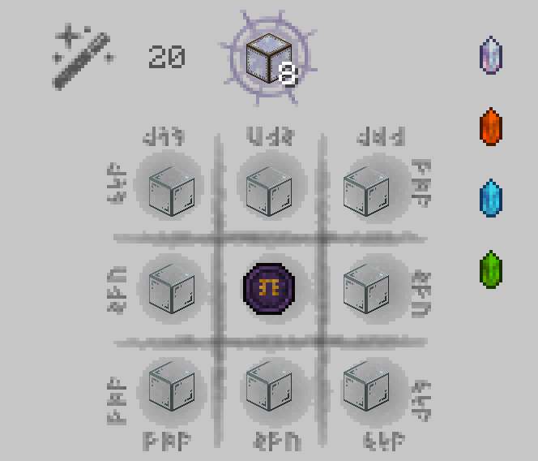 |
【神秘の作業台で作成】 消費Vis：20 OrdoのVis結晶：1 IgnisのVis結晶：1 AquaのVis結晶：1 TerraのVis結晶：1 ガラス*8 Warding Sigil*1 |
耐爆、耐汚染性能が非常に高いガラス。 Thaumcraftの保護ガラスのような見た目をしているが、ウィザーの体当たりは防げない。 |
| Fortified Glass Pane | 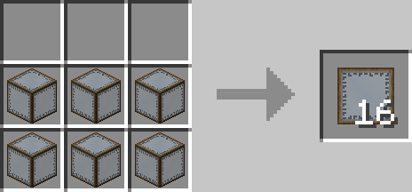 | Fortified Glass*6 | 耐爆、耐汚染性能が非常に高い板ガラス。 |
| Starfield Glass(Rift) | 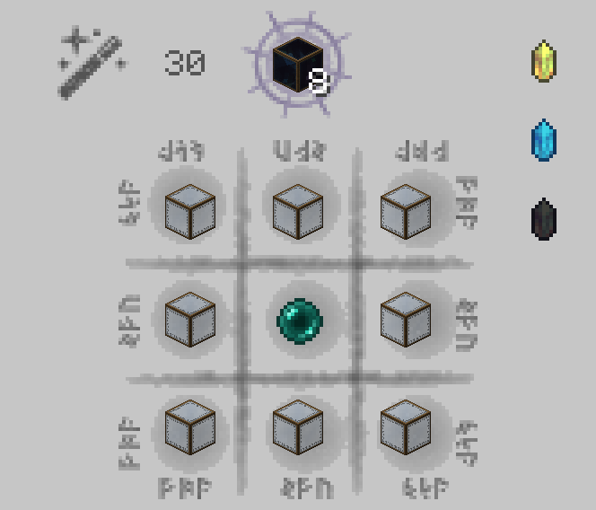 |
【神秘の作業台で作成】 消費Vis：30 AerのVis結晶：1 AquaのVis結晶：1 PerditioのVis結晶：1 Fortified Glass*8 エンダーパール*1 |
耐爆、耐汚染性能が非常に高いブロック。設置者以外には破壊できない。 |
| Starfield Glass(Dimensional Fracture) | 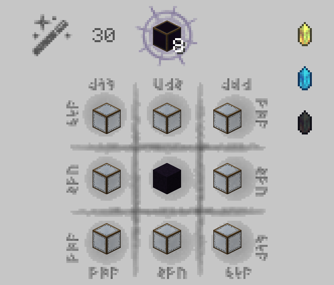 |
【神秘の作業台で作成】 消費Vis：30 AerのVis結晶：1 AquaのVis結晶：1 PerditioのVis結晶：1 Fortified Glass*8 Void Stone*1 |
耐爆、耐汚染性能が非常に高いブロック。設置者以外には破壊できない。 |
| Starfield Glass(Magic Mirror) | 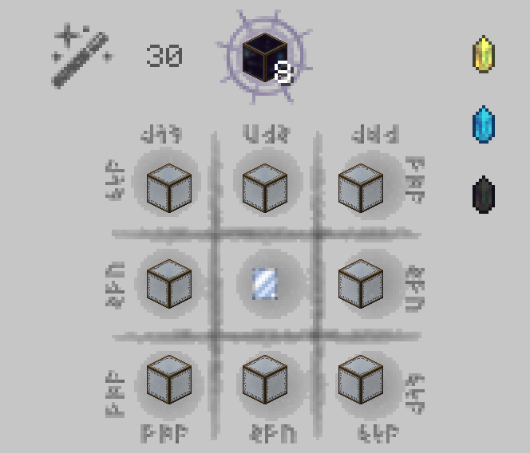 |
【神秘の作業台で作成】 消費Vis：30 AerのVis結晶：1 AquaのVis結晶：1 PerditioのVis結晶：1 Fortified Glass*8 鏡板ガラス*1 |
耐爆、耐汚染性能が非常に高いブロック。設置者以外には破壊できない。 |
| Greatwood Arcane Door | 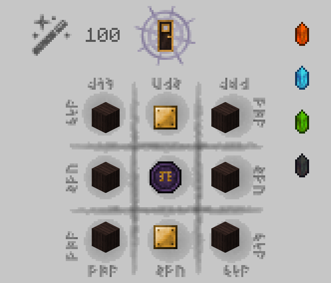 |
【神秘の作業台で作成】 消費Vis：100 IgnisのVis結晶：1 AquaのVis結晶：1 TerraのVis結晶：1 PerditioのVis結晶：1 グレートウッドの木材*6 真鍮板*2 Warding Sigil*1 |
設置者のみ開けることができるドア。 籠手を持った状態でドアの下部をシフト+右クリックすると撤去できる。 |
| Thaumium Arcane Door | 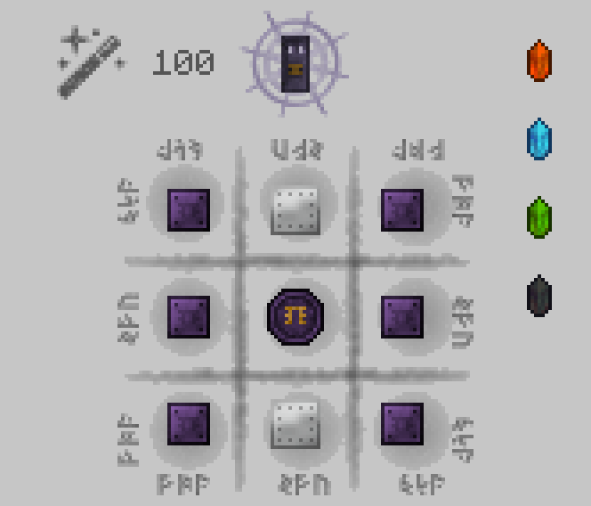 |
【神秘の作業台で作成】 消費Vis：100 IgnisのVis結晶：1 AquaのVis結晶：1 TerraのVis結晶：1 PerditioのVis結晶：1 魔導金属板*6 鉄板*2 Warding Sigil*1 |
設置者のみ開けることができるドア。 籠手を持った状態でドアの下部をシフト+右クリックすると撤去できる。 |
| Silverwood Arcane Door | 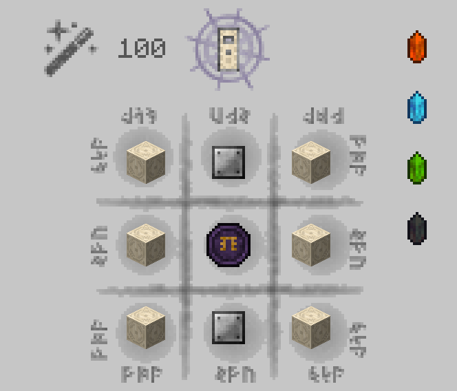 |
【神秘の作業台で作成】 消費Vis：100 IgnisのVis結晶：1 AquaのVis結晶：1 TerraのVis結晶：1 PerditioのVis結晶：1 シルバーウッドの木材*6 鉄板*2 Warding Sigil*1 |
設置者のみ開けることができるドア。 籠手を持った状態でドアの下部をシフト+右クリックすると撤去できる。 |
・その他ブロック
| 名前 | 画像 | 作り方 | 説明 |
|---|---|---|---|
| Greatwood Button | 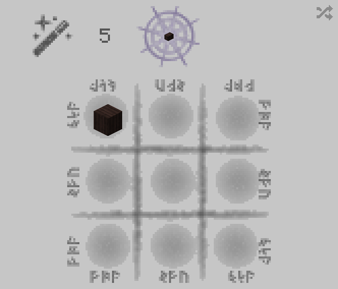 |
【神秘の作業台で作成】 消費Vis：5 グレートウッドの木材*1 |
|
| Silverwood Button | 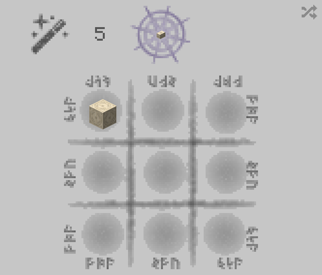 |
【神秘の作業台で作成】 消費Vis：5 シルバーウッドの木材*1 |
|
| Arcane Stone Button | 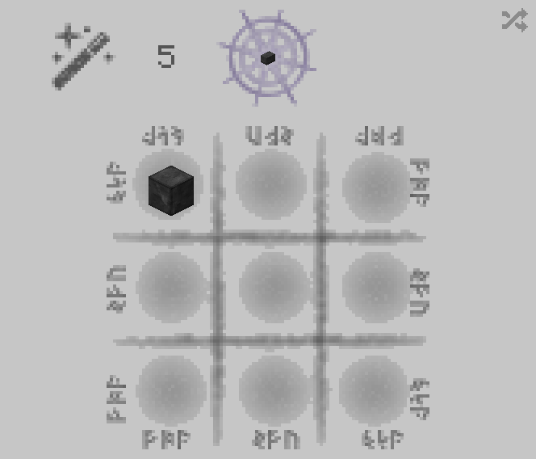 |
【神秘の作業台で作成】 消費Vis：5 神秘の石*1 |
|
| Greatwood Arcane Button | 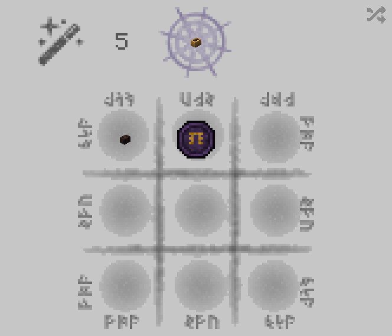 |
【神秘の作業台で作成】 消費Vis：5 グレートウッドの木材*1 Warding Sigil*1 |
設置者以外破壊、押すことができない。 籠手を持った状態でシフト+右クリックすると撤去できる。 |
| Silverwood Arcane Button | 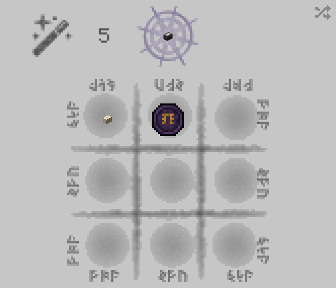 |
【神秘の作業台で作成】 消費Vis：5 シルバーウッドの木材*1 Warding Sigil*1 |
設置者以外破壊、押すことができない。 籠手を持った状態でシフト+右クリックすると撤去できる。 |
| Arcane Stone Arcane Button | 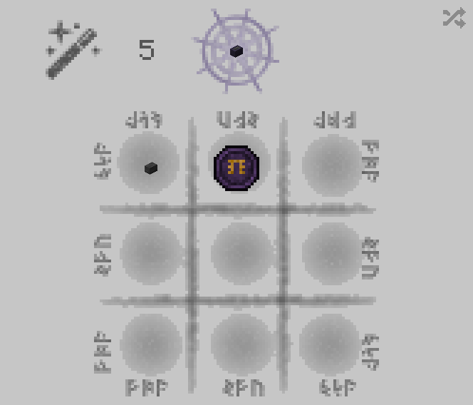 |
【神秘の作業台で作成】 消費Vis：5 神秘の石*1 Warding Sigil*1 |
設置者以外破壊、押すことができない。 籠手を持った状態でシフト+右クリックすると撤去できる。 |
| Greatwood Pressure Plate | 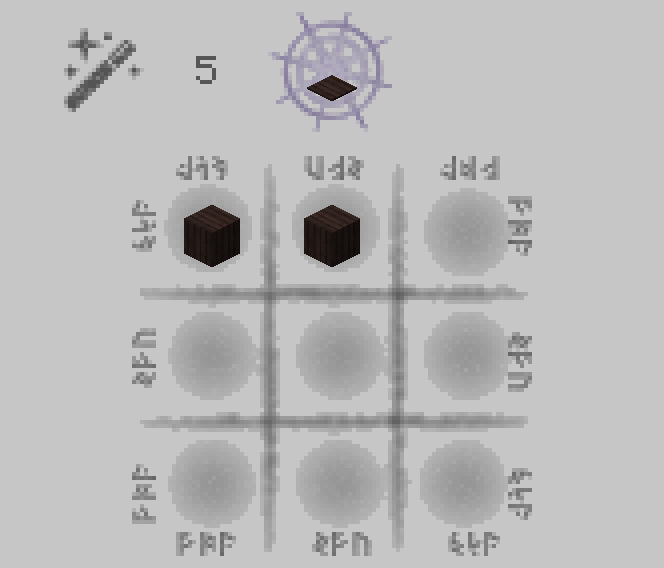 |
【神秘の作業台で作成】 消費Vis：5 グレートウッドの木材*1 |
|
| Silverwood Pressure Plate | 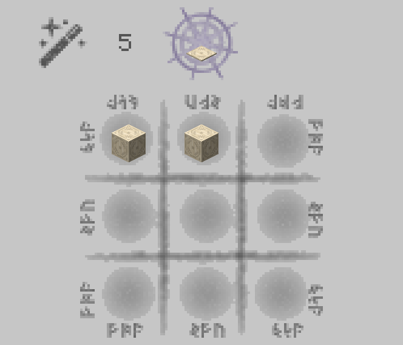 |
【神秘の作業台で作成】 消費Vis：5 シルバーウッドの木材*1 |
|
| Arcane Stone Pressure Plate | 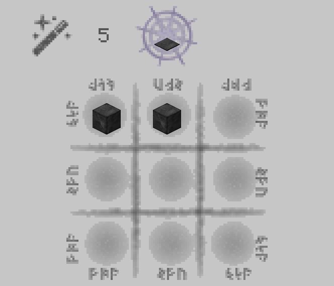 |
【神秘の作業台で作成】 消費Vis：5 神秘の石*1 |
|
| Greatwood Arcane Pressure Plate | 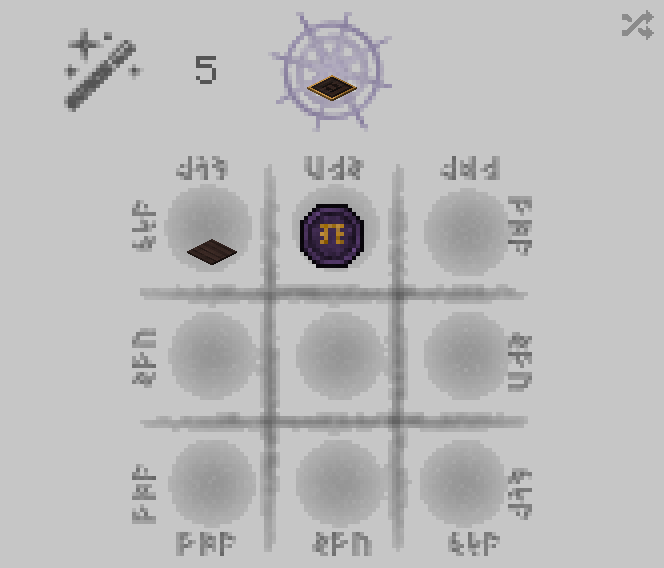 |
【神秘の作業台で作成】 消費Vis：5 Greatwood Pressure Plate*1 Warding Sigil*1 |
設置者以外破壊、押すことができない。 籠手を持った状態でシフト+右クリックすると撤去できる。 |
| Silverwood Arcane Pressure Plate | 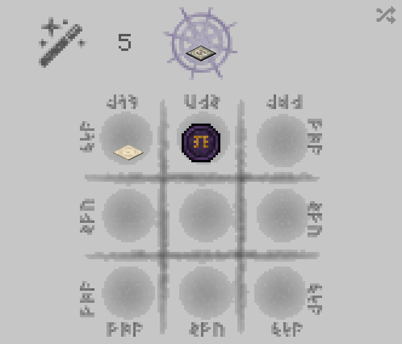 |
【神秘の作業台で作成】 消費Vis：5 Silverwood Pressure Plate*1 Warding Sigil*1 |
設置者以外破壊、押すことができない。 籠手を持った状態でシフト+右クリックすると撤去できる。 |
| Arcane Stone Arcane Pressure Plate | 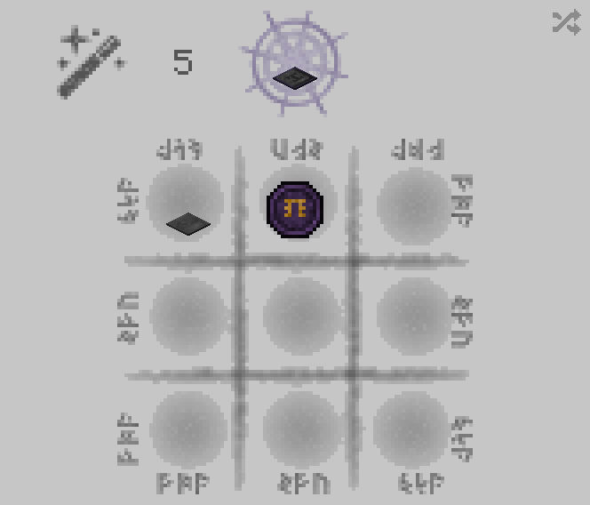 |
【神秘の作業台で作成】 消費Vis：5 Arcane Stone Pressure Plate Warded Sigil*1 |
設置者以外破壊、押すことができない。 籠手を持った状態でシフト+右クリックすると撤去できる。 |
| Greatwood Arcane Trapdoor | 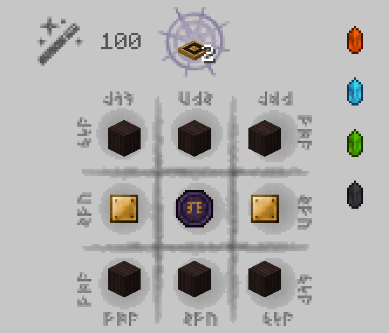 |
【神秘の作業台で作成】 消費Vis：100 IgnisのVis結晶：1 AquaのVis結晶：1 TerraのVis結晶：1 PerditioのVis結晶：1 グレートウッドの木材*6 真鍮板*2 Warded Sigil*1 |
設置者以外破壊、開けることができない。 籠手を持った状態でシフト+右クリックすると撤去できる。 |
| Silverwood Arcane Trapdoor | 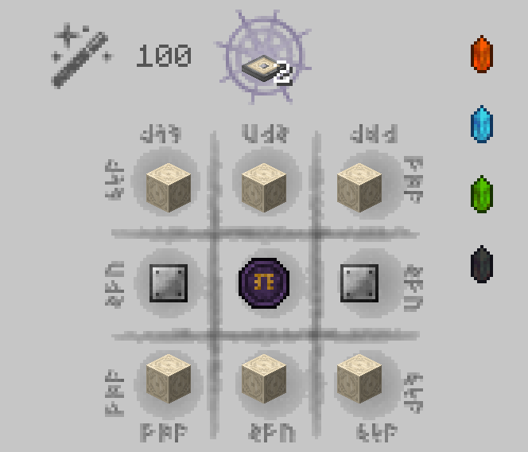 |
【神秘の作業台で作成】 消費Vis：100 IgnisのVis結晶：1 AquaのVis結晶：1 TerraのVis結晶：1 PerditioのVis結晶：1 シルバーウッドの木材*6 鉄板*2 Warded Sigil*1 |
設置者以外破壊、開けることができない。 籠手を持った状態でシフト+右クリックすると撤去できる。 |
| Arcane Stone Arcane Trapdoor | 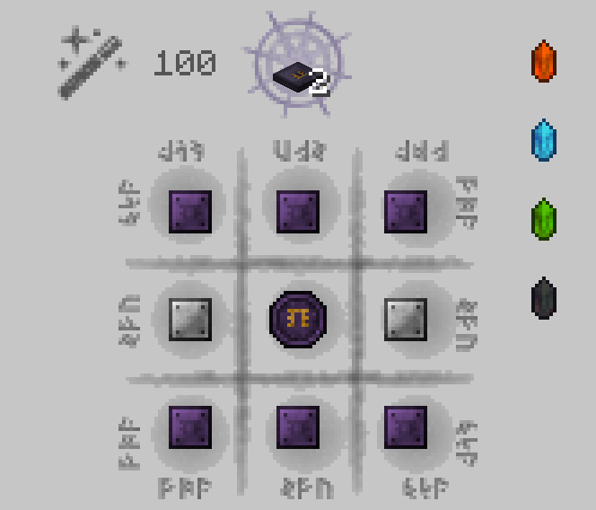 |
【神秘の作業台で作成】 消費Vis：100 IgnisのVis結晶：1 AquaのVis結晶：1 TerraのVis結晶：1 PerditioのVis結晶：1 魔導金属板*6 鉄板*2 Warded Sigil*1 |
設置者以外破壊、開けることができない。 籠手を持った状態でシフト+右クリックすると撤去できる。 |
・基本アイテム
| 名前 | 画像 | 作り方 | 説明 |
|---|---|---|---|
| Seal Copier | 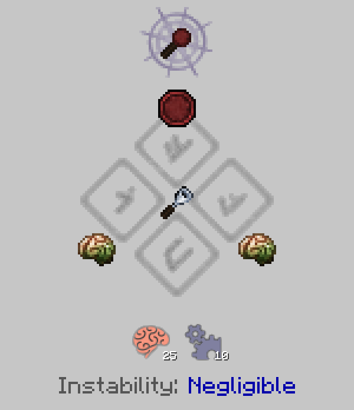 |
【神秘の祭壇で作成】 Cognitio：25 Machina：10 ゴーレム術師の鐘*1 空白の印章*1 ゾンビの脳*2 |
設置された印章に対して右クリックで印章の情報をコピーできる。 他の同種の印章に再び右クリックすると最初にコピーした情報をペーストできる。 シフト+右クリックで情報をリセットできる。 |
| Flux Seed(Flux: 100) | 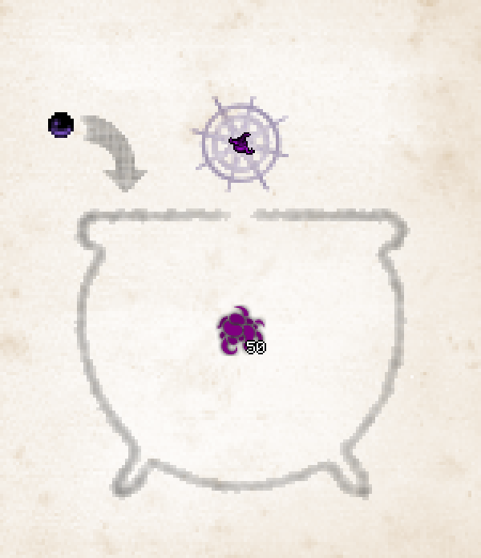 |
【るつぼで作成】 Vitium：50 虚無の種*1 |
右クリックしたチャンクのフラックス値を100増加させる。 |
| Flux Seed(Flux: 200) | 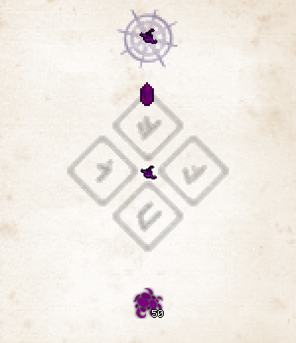 |
【神秘の祭壇で作成】 Vitium：50 Flux Seed(Flux: 100)*1 VitiumのVis結晶*1 |
右クリックしたチャンクのフラックス値を200増加させる。 |
| Flux Seed(Flux: 300) | 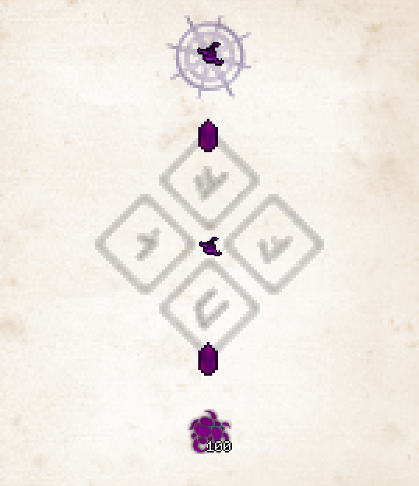 |
【神秘の祭壇で作成】 Vitium：100 Flux Seed(Flux: 100)*1 VitiumのVis結晶*2 |
右クリックしたチャンクのフラックス値を300増加させる。 |
| Flux Seed(Flux: 1000) | 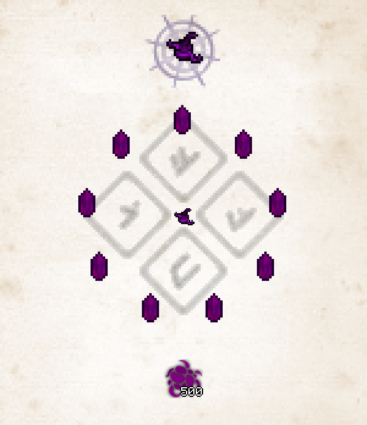 |
【神秘の祭壇で作成】 Vitium：500 Flux Seed(Flux: 100)*1 VitiumのVis結晶*9 |
右クリックしたチャンクのフラックス値を1000増加させる。 |
| Fracture Locator |
【神秘の作業台で作成】 消費Vis：25 AerのVis結晶：1 PerditioのVis結晶：1 真鍮板*4 VacuosのVis結晶：4 レアアース*1 |
ネザーでDimensional Fractureを見つけるための道具。 Dimensional Fractureの方角を向くと紫色に変わっていく。 |
|
| Primal Cutter |
【神秘の祭壇で作成】 Terra*75 Aversio*75 Instrumentum*50 Praecantatio*50 Vacuos*50 Alienis*50 Desiderium*5 始原の真珠*1 ゼファーの剣：1 虚無の斧*1 虚無の剣*1 流水の斧*1 |
攻撃力10() 歪み促進2が付いている。 複数体敵がいると攻撃されたモブ以外の2体のモブに攻撃が入る。 流水の斧と同じ効果を持ち、木を上の方から切り始める。 攻撃されたモブは弱体化Ⅱを付与される。 右クリックを長押しすると周囲のMobを引き寄せる。 耐久力が自動回復する。 |
|
| Elytra Harness |
【神秘の祭壇で作成】 Motus*75 Potentia*50 Volatus*50 ただのベルト*1 虚無鋼板：2 Impetus Cell*1 AlienisのVis結晶*1 VacuosのVis結晶*1 |
制限付きエリトラ。 Bauble枠に装備できる。 飛行中に耐久力が1秒に1減っていく。 Visを50まで充填でき、耐久力の前にVisを消費する。 耐久力が1になった段階で羽が閉じ、壊れることはないが落下死に注意。 地上にいる間は耐久力が自然回復する。 |
|
| Impetus Thruster Upgrade |
【神秘の祭壇で作成】 Motus*75 Potentia*50 Volatus*45 Alienis*25 ただのベルト*1 金インゴット：2 羽*2 VolatusのVis結晶*1 Impetus Jewel*1 AerのVis結晶*1 |
Elytra Harnessとクラフトするとアップグレードができる。 推進力充填でき、それを消費して飛行中にスペースを押すと上昇できるようになる。 アップグレード後のElytra Harnessは単体クラフトで分離させることができる。 |
|
| Thaumostatic Harness |
【神秘の祭壇で作成】 Machina*50 Potentia*50 Volatus*50 Motus*25 形態共鳴器*1 AerのVis結晶：2 神秘の浮遊器*1 グレートウッドの木材*2 |
Visを消費してクリエ飛行ができる。 Bauble枠に装備できる。 Visを最大まで充填すると5分間連続で飛行できる。 |
|
| Gyroscope Upgrade |
【神秘の祭壇で作成】 Vinculum*35 Aer*25 Volatus*25 ただのベルト*1 魔導金属板：2 レッドストーン*1 VinculumのVis結晶*1 |
Thaumostatic Harnessとクラフトするとアップグレードができる。 飛行速度はやや落ちるが、最大充填で7分半連続飛行できる。 アップグレード後のThaumostatic Harnessは単体クラフトで分離させることができる。 |
|
| Girdle Upgrade |
【神秘の祭壇で作成】 Aer*50 Motus*25 Volatus*25 ただのベルト*1 金インゴット：2 羽*2 VolatusのVis結晶*1 AerのVis結晶*1 |
Thaumostatic
Harnessとクラフトするとアップグレードができる。 飛行中にスプリントができるようになるが、最大連続飛行時間が4分9秒にまで落ちる。 アップグレード後のThaumostatic Harnessは単体クラフトで分離させることができる。 |
|
| Impulse Cannon |
【神秘の祭壇で作成】 Alienis*75 Aversio*75 Potentia*75 Machina*50 Mortuus*50 Vacuos*30 Tenebrae*25 Impetus Cell*1 虚無鋼板：2 安定器*1 真鍮板*1 形態共鳴器*1 Redstone Inlay*1 Impetus Jewel*1 精密神秘機巧*1 魔導金属板*1 |
充填した推進力を消費してビームを放つ。 秒間1連射でき、射撃ダメージは一発6()。 射程範囲は33ブロック。 |
・裂け目関連
| 名前 | 画像 | 作り方 | 説明 |
|---|---|---|---|
| Flux Inducer |
【神秘の祭壇で作成】 Machina：50 Vitium：30 Alienis：10 Vacuos：5 組み入れ型エッセンシア輸液器*1 エッセンシア管*2 簡易神秘機巧*1 真鍮板*1 形態共鳴器*1 グレートウッドの木材*1 |
Vitiumのエッセンシアを裂け目に注入することで裂け目を成長させる装置。 紫色の面が裂け目に面していてかつ裂け目から12ブロック以内にある必要がある。 エッセンシアは注入面以外の5面からエッセンシア管を繋げられる。 最大2倍にまで成長する。 |
|
| Metaspatial Accumulator |
【神秘の祭壇で作成】 Vinculum：50 Machina：30 Vacuos：30 Vitium：25 Alienis：20 Permutatio：10 琥珀ブロックor琥珀レンガ*1 虚無の種*1 鉄板*1 神秘の石*2 虚無鋼板*2 真鍮板*1 |
裂け目をReinforced Jarに閉じ込める装置。 裂け目の真下にある必要があり、Metaspatial Accumulatorの下にReinforced Jarを設置する。 籠手で右クリックすると動作する。 Reinforced Jarは動作が終わるとRift in a Jarになる。 |
|
| Metaspatial Extruder |
【神秘の祭壇で作成】 Perditio：50 Machina：30 Vacuos：30 Vitium：25 Alienis：20 Permutatio：10 アルメンタム*1 虚無の種*1 簡易神秘機巧*1 虚無鋼板*2 エルドリッチの石*1 真鍮板*1 |
裂け目をRift in a Jarにから開放する装置。 Metaspatial Accumulatorの下にRift in a Jarを設置し、籠手で右クリックすると動作する。 |
|
| Reinforced Jar |
【神秘の作業台で作成】 消費Vis：25 OrdoのVis結晶：1 Warded Sigil*1 保護瓶*1 鉄板*1 |
裂け目を収納するための瓶。 | |
| Extradimentional Monitor |
【神秘の作業台で作成】 消費Vis：50 AerのVis結晶：1 TerraのVis結晶：1 PerditioのVis結晶：1 IgnisのVis結晶：1 OrdoのVis結晶：1 AquaのVis結晶：1 エルドリッチの石*3 ソーモメーター*1 エルドリッチの石*3 |
近くの裂け目をモニターできる。右クリックでモード変更ができる。 | |
| Stability Field Generator |
【神秘の作業台で作成】 消費Vis：250 TerraのVis結晶：1 AerのVis結晶：1 OrdoのVis結晶：1 真鍮板*2 琥珀ブロック*1 神秘の石ハーフブロック*2 簡易神秘機巧*1 神秘の石*2 レッドストーン |
5RF/t消費することで周囲の裂け目を安定させる装置。 |
・推進力関連
| 名前 | 画像 | 作り方 | 説明 |
|---|---|---|---|
| Impetus Drainer |
【神秘の作業台で作成】 消費Vis：50 IgnisのVis結晶 OrdoのVis結晶 PerditioのVis結晶 虚無鋼板*4 虚無鋼ブロック*1 Impetus Jewel*1 エルドリッチの石*2 鉄格子*1 |
裂け目から推進力を生成する装置。 裂け目に隣接して設置する必要がある。 |
|
| Impetus Relay |
【神秘の作業台で作成】 消費Vis：25 IgnisのVis結晶 OrdoのVis結晶 PerditioのVis結晶 Impetus Jewel*1 虚無鋼板*1 |
推進力を上限距離以上に輸送するために使う。 | |
| Impetus Gate |
【神秘の作業台で作成】 消費Vis：50 TerraのVis結晶 OrdoのVis結晶 PerditioのVis結晶 Warded Sigil*1 虚無鋼板2 Impetes Relay*1 レッドストンリピーター*1 |
Impetus Relayの上位版。レッドストーン信号でON/OFFができる。 | |
| Impetus Diffuser |
【神秘の作業台で作成】 消費Vis：50 IgnisのVis結晶 OrdoのVis結晶 PerditioのVis結晶 鉄板 虚無鋼板*3 Impetus Jewel*1 神秘の石*2 |
推進力を周囲8ブロックのプレイヤーのアイテムに充電させる装置。 | |
| Void Recharge Pedestal |
【神秘の作業台で作成】 消費Vis：75 IgnisのVis結晶 OrdoのVis結晶 PerditioのVis結晶 AlienisのVis結晶*2 Impetus Jewel*1 簡虚無鋼板*2 水銀*1 エルドリッチの石*3 |
推進力をチャージできるアイテムに推進力をチャージする装置。 | |
| Impetus Generator |
【神秘の作業台で作成】 消費Vis：100 IgnisのVis結晶 AerのVis結晶 OrdoのVis結晶 PerditioのVis結晶 エルドリッチの石*4 レッドストーン*1 レアアース*2 ピストン*1 Impetus Jewel*1 |
推進力を消費して50RF/t発電する。 | |
| Impetus Matrix | エルドリッチの台座*2 ルーンのマトリックス*1 |
推進力を溜めておける構造物。 ブロックを並べたら、サリス・ムンドゥスをルーンのマトリックスに右クリックで活性化できる。 Impetus Cellを上下の台座4面計8個付けることができ、これが蓄電池の役割をする。 もし不安定な状態になってImpetus Cellが外れてしまった場合、溜めてあった推進力は消失する。 神秘の祭壇と同様の方法で安定化できる。 推進力が溜まっている量でImpetus Matrixの色が変わり、赤→黄色に変わっていき、最終的に緑になると満タンになった証拠。 |
|
| Impetus Mirror |
【神秘の祭壇で作成】 Motus：25 Permutatio：25 Potentia：25 鏡板ガラス*1 虚無鋼板*2 エンダーパール*1 Impetus Jewel*1 |
推進力をテレポートできる鏡。 設置することができ、入力側を置いたら出力側で使うImpetus Mirrorで右クリックして2つの鏡をリンクさせることができる。 |
|
| Impetus Resonator |
【神秘の作業台で作成】 消費Vis：125 OrdoのVis結晶：1 PerditioのVis結晶：1 虚無鋼板*3 Impetus Jewel*1 棒1 |
装置から装置へと推進力を流すためにリンクさせる道具。 送る側にImpetus Resonatorを持った状態でシフト+右クリックし、受け取り側を右クリックするとリンクできる。 リンクに成功するとブロックに色のついたボックスが現れるが、これは推進力の方向を示している。 青→緑→赤の順に推進力が流れている。 |
|
| Biome Focus |
【神秘の作業台で作成】 消費Vis：25 IgnisのVis結晶：1 AquaのVis結晶：1 TerraのVis結晶：1 AerのVis結晶：1 OrdoのVis結晶：1 PerditioのVis結晶：1 真鍮板*3 魔導金属板*4 水銀*1 |
現在立っている場所のバイオームを記録できる。 単体クラフトで記録をリセットできる。 |
|
| Arcane Teraformer |
【神秘の作業台で作成】 消費Vis：150 IgnisのVis結晶：1 AquaのVis結晶：1 TerraのVis結晶：1 AerのVis結晶：1 OrdoのVis結晶：1 PerditioのVis結晶：1 魔導金属板*3 ポーション噴霧器*1 エッセンシア管*3 Impetus Jewel*1 |
周囲のバイオームをBiome Focusで記録したバイオームに変換する装置。 変更したいバイオームのBiome FocusをArcane TeraformerのGUIに置くと左側にエッセンシアが要求される。 右側は範囲や形状を設定できる。 バイオームを変更するには要求されたエッセンシア、空気中のオーラ、推進力が必要。 エッセンシアはPermutatioが必ず要求され、下面から供給できる。 籠手でArcane Teraformerを右クリックすると変更が開始される。 再びクリックすると中断されるが、既に置き換わったバイオームはArcane Teraformerで変更する以外に戻す方法はない。 大気中のオーラを消費し続けるので、大規模な変更の際はVis Regeneratorを設置しておくことをお勧めする。 |
・籠手関連
| 名前 | 画像 | 作り方 | 説明 |
|---|---|---|---|
| Thaumium Caster's Gauntlet |
【神秘の作業台で作成】 消費Vis：250 AerのVis結晶：2 TerraのVis結晶：2 PerditioのVis結晶：2 IgnisのVis結晶：2 OrdoのVis結晶：2 AquaのVis結晶：2 魔導金属板*3 魔法の布*4 Vis共鳴器*1 ソーモメーター*1 |
消費Visを10％軽減、魔法のクールタイムを僅かに減少させる。 また、このアドオンで追加されるオーグメントを最大3つまで付与できる。 |
|
| Voidseer Caster's Gauntlet |
【神秘の祭壇で作成】 Alienis：75 Vacuos：75 Potentia：50 虚無覗きの真珠*1 サリス・ムンドゥス*1 魔法の布*1 虚無鋼板*4 |
消費Visを30％軽減、魔法のクールタイムを減少させ、周囲3x3からオーラを吸収する。 歪み促進2が付いている。 また、このアドオンで追加されるオーグメントを最大3つまで付与できる。 |
|
| Impetus Conductor |
【神秘の作業台で作成】 消費Vis：25 AerのVis結晶：1 IgnisのVis結晶：1 PerditioのVis結晶：1 魔導金属板*1 Impetus Cell*1 |
Impetus Power(推進力)を溜めて使うことができる。 推進力はVoid Recharge Pedestalでチャージできる。 |
|
| Effect Crystal: Focus Power |
【るつぼで作成】 Aversio：15 Vitreus：10 Praecantatio：5 OrdoのVis結晶*1 |
各種Modifierとクラフトして籠手にセットして使うことができる。 魔法をより強力にする効果がある。 |
|
| Effect Crystal: Cast Speed |
【るつぼで作成】 Potentia：15 Vitreus：10 Praecantatio：5 OrdoのVis結晶*1 |
各種Modifierとクラフトして籠手にセットして使うことができる。 魔法のクールタイムを削減する効果がある。 |
|
| Effect Crystal: Vis Discount |
【るつぼで作成】 Auram：15 Vitreus：10 Praecantatio：5 OrdoのVis結晶*1 |
各種Modifierとクラフトして籠手にセットして使うことができる。 魔法使用時のVisを削減する効果がある。 |
|
| Modifier: Experience |
【神秘の作業台で作成】 消費Vis：15 OrdoのVis結晶：1 Vis共鳴器*1 エメラルド*2 ラピスラズリ*1 |
Effect Crystalとクラフトして籠手にセットして使うことができる。 現在の経験値が多い程、魔法が強力になる。 |
|
| Vis Battery Augment |
【神秘の作業台で作成】 消費Vis：50 AerのVis結晶：2 IgnisのVis結晶：2 OrdoのVis結晶：2 PerditioのVis結晶：2 AquaのVis結晶：1 TerraのVis結晶：1 神秘の石*4 Vis電池*4 形態共鳴器*1 |
籠手にセットして使うことができる。 チャンクの最大Vis量が90％以上の時にVisを40まで吸収できる。 Vis Battery Argument内のVisはチャンク内のVisが不足した時のみ使われる。 |
|
| Modifier: Overworld |
【神秘の作業台で作成】 消費Vis：15 AquaのVis結晶：1 TerraのVis結晶：1 Vis共鳴器*1 土*1 石*1 |
Effect Crystalとクラフトして籠手にセットして使うことができる。 オーバーワールドで魔法を使用すると魔法がより強力になる。 |
|
| Modifier: Nether |
【神秘の作業台で作成】 消費Vis：15 IgnisのVis結晶：1 PerditioのVis結晶：1 Vis共鳴器*1 ネザーラック*1 グロウストーン*1 |
Effect Crystalとクラフトして籠手にセットして使うことができる。 ネザーで魔法を使用すると魔法がより強力になる。 |
|
| Modifier: The End |
【神秘の作業台で作成】 消費Vis：15 AerのVis結晶：1 OrdoのVis結晶：1 Vis共鳴器*1 エンドストーン*1 黒曜石*1 |
Effect Crystalとクラフトして籠手にセットして使うことができる。 エンドで魔法を使用すると魔法がより強力になる。 |
|
| Modifier: Emptiness |
【神秘の作業台で作成】 消費Vis：15 TerraのVis結晶：1 PerditioのVis結晶 Vis共鳴器*1 Void Stone*1 Tainted Void Stone*1 |
Effect Crystalとクラフトして籠手にセットして使うことができる。 このアドオンで追加されるディメンション、Emptinessで魔法を使用すると魔法がより強力になる。 |
|
| Modifier: Frenzy |
【神秘の作業台で作成】 消費Vis：15 AerのVis結晶：1 TerraのVis結晶：1 IgnisのVis結晶：1 PerditioのVis結晶 OrdoのVis結晶 AquaのVis結晶 魔導金属板*1 OrdoのVis結晶*1 Vis共鳴器*1 |
Effect Crystalとクラフトして籠手にセットして使うことができる。 継続的に攻撃を与えていると魔法が強力になり、一定時間内にダメージを与えていないと強さがリセットされる。 |
|
| Modifier: Elemental |
【神秘の作業台で作成】 消費Vis：25 IgnisのVis結晶：1 PerditioのVis結晶 Vis共鳴器*1 Void Stone*1 Tainted Void Stone*1 |
Effect
Crystalとクラフトして籠手にセットして使うことができる。 各種Visクリスタルとクラフトすることで特化Visを変更できる。 特化されたVisの魔法が強力になるが、特化していない種類の魔法を用いると魔法に悪影響が出る場合がある。 |
・Arcane Chest関連
| 名前 | 画像 | 作り方 | 説明 |
|---|---|---|---|
| Arcane Chest |
【神秘の作業台で作成】 消費Vis：75 IgnisのVis結晶：1 AquaのVis結晶：1 TerraのVis結晶：1 PerditioのVis結晶：1 Warded Sigil*1 魔導金属板*5 チェスト*1 |
設置者にしか破壊、開けられないチェスト。 籠手を持った状態でシフト+右クリックすると撤去できる。 |
|
| Iron Key |
【神秘の作業台で作成】 消費Vis：5 IgnisのVis結晶：1 AquaのVis結晶：1 TerraのVis結晶：1 PerditioのVis結晶：1 ゾンビの脳*1 鉄塊*4 |
何もない所で右クリックすると使用者と鍵が結び付けられる。 この鍵を持った状態なら他のプレイヤーでも使用者が設置したチェストを開けることができる。 何もない所でシフト+右クリックすると使用者と鍵との結び付きが解除される。 |
|
| Brass Key |
【神秘の作業台で作成】 消費Vis：5 IgnisのVis結晶：1 AquaのVis結晶：1 TerraのVis結晶：1 PerditioのVis結晶：1 ゾンビの脳*1 錬金真鍮塊*4 |
何もない所で右クリックすると使用者と鍵が結び付けられる。 この鍵を持った状態なら他のプレイヤーでも使用者が設置したチェストを開けることができる。 何もない所でシフト+右クリックすると使用者と鍵との結び付きが解除される。 また、作業台でプレイヤーと結び付けられていないIron KeyとクラフトすることでIron Keyに結び付きをコピーできる。 |
|
| Thaumium Key |
【神秘の作業台で作成】 消費Vis：5 IgnisのVis結晶：1 AquaのVis結晶：1 TerraのVis結晶：1 PerditioのVis結晶：1 ゾンビの脳*1 魔導金属塊*4 |
Thaumium KeyはプレイヤーにではなくWarding
Sigilを用いたあらゆる設置物に対して結び付きができる。 何もない所でシフト+右クリックすると使用者と鍵との結び付きが解除される。 設置物が結び付けられたThaumium Key、何も結び付けられていないThaumium Key、設置物と同じ所有者が結び付けられたBrass KeyとクラフトするとThaumium Keyに結び付きをコピーできる。 |
・その他
| 名前 | 画像 | 作り方 | 説明 |
|---|---|---|---|
| Vis Regenerator |
【神秘の作業台で作成】 消費Vis：100 AerのVis結晶：2 グレートウッドの木材*4 鉄格子*1 鉄板*2 Vis Regeneration Lattice*1 簡易神秘機巧*1 |
置かれたチャンク内のVisを復元する。 チャンク内に裂け目があると機能しない。 |
|
| Autocaster |
【神秘の祭壇で作成】 消費Vis：5 Machina：50 Cognitio：30 Auram：25 Aversio：25 Sensus：25 生体魔導の心*1 詠唱の籠手*1 Vis共鳴器*1 形態共鳴器*1 簡易神秘機巧*1 グレートウッドの木材*2 真鍮板*1 |
自動で焦点具を詠唱するタレット。 右クリックでGUIが開き、詳細な設定ができる。 焦点具をAutocasterに対して右クリックすると挿入できる。 |
・追加Mob
| 名前 | 画像 | 情報 | 説明 |
|---|---|---|---|
| Primodial Wisp | 体力 250(x125) ドロップ 始原の塵芥 宝物袋(アンコモン) |
||
| Eldritch Guardian | 体力 50(x25) ドロップ エルドリッチの骨董品 |
Emptinessにあるダンジョンでスポーンする。 | |
| Eldritch Warden | 体力 400(x200) ドロップ 始原の真珠 宝物袋(レア) Tatterd Scrolls |
Emptinessにあるダンジョンのボス。 自然回復する。 バリアを破壊する必要がある。 |
|
| Eldritch Construct | 体力 400(x200) ドロップ 始原の真珠 宝物袋(レア) Tatterd Scrolls |
Emptinessにあるダンジョンのボス。 自然回復する。 |
・追加ディメンション
Emptinessの行き方
| ・ネザーでFracture Locatorを用いてDimensional Fractureを見つける。 ・推進力を充填したImpetus Conductor付きの籠手で右クリックする。 |
|---|
・Emptiness
| 開かれたDimensional Fractureを通ると入ることができる。 地面に生成されるTainted Flowerは10のVitiumを持ち、エッセンシアの供給に最適。 所々にダンジョンが生成され、ボスのドロップが研究を進めるキーアイテムとなっている。 所々にDimensional Fractureが生成されており、飛ばされるディメンションと地面のブロックは対応している。 |
|---|
-
MOD名
Psi
-
解説サイト
https://www.youtube.com/watch?v=6Z29UICD5Jc&list=PL_mkfOLu9GVfbZAn6blVhALq0Biwmca0e&index=10
(おすすめ攻略動画)
-
MOD名
Blood Magic
-
解説サイト
https://w.atwiki.jp/minecraft/pages/1522.html
(Minecraft Japan Wiki)